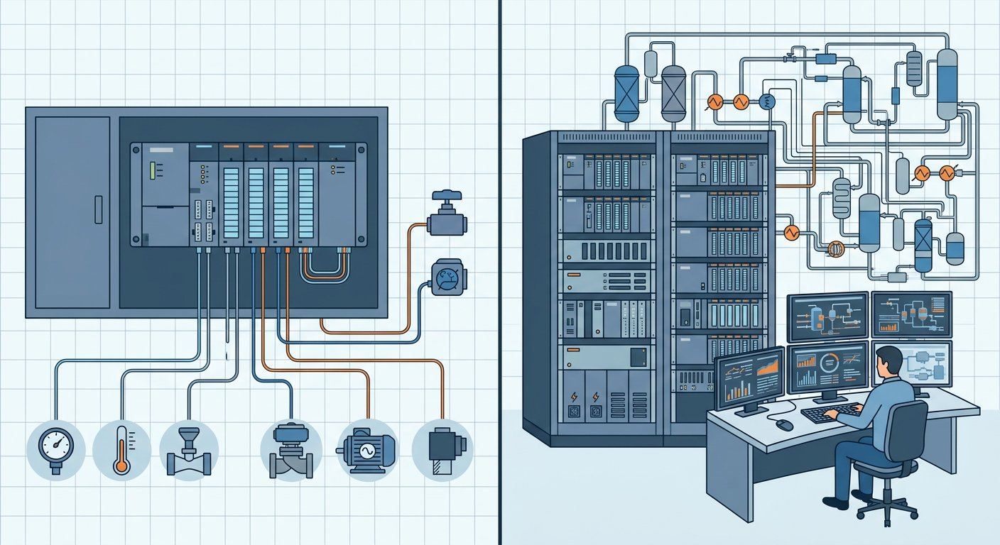

DCS و PLC هرکدام چه هستند؟
PLC (کنترلر منطقی برنامهپذیر) برای اجرای منطق کنترل سریع و گسسته ساخته شد و در ماشینآلات، خطوط بستهبندی و فرآیندهای کوچک همهجا حاضر است. DCS (سیستم کنترل توزیعشده) برای کنترل فرآیندهای پیوسته مانند پالایشگاه، پتروشیمی و نیروگاه با هزاران نقطهٔ ورودی/خروجی طراحی شده و پایگاه داده و اپراتوری یکپارچه ارائه میدهد.
مقایسه از نگاه معماری
| معیار | DCS | PLC |
|---|---|---|
| معماری | توزیعشده با کنترلرهای افزونه | متمرکز یا ماژولار |
| سرعت اسکن | مناسب فرآیند (صدها میلیثانیه) | سریع (میلیثانیه) |
| افزونگی | ذاتی در کنترلر و شبکه | معمولاً بهصورت افزودنی |
| یکپارچگی داده | پایگاه داده واحد سطح کارخانه | نیازمند SCADA/HMI مجزا |
| کاربرد غالب | فرآیند پیوسته | تولید گسسته و ماشینآلات |
مرز کاربردها با PLCهای پیشرفته و PACها در حال محو شدن است.
معیار انتخاب برای پروژه
- ماهیت فرآیند: پیوسته (DCS) در برابر گسسته/ماشینی (PLC).
- تعداد نقاط ورودی/خروجی و مقیاس کارخانه.
- نیاز به افزونگی و دسترسپذیری بالا.
- مهارت تیم بهرهبرداری و هزینهٔ چرخهٔ عمر.
روندهای جدید و همگرایی DCS و PLC
مرز سنتی بین DCS و PLC با ظهور کنترلرهای اتوماسیون قابل برنامهریزی (PAC) و PLCهای پیشرفته در حال محو شدن است. امروزه در پروژههای متوسط، ترکیب PLC و SCADA با هزینهٔ کمتر، بسیاری از قابلیتهای DCS را ارائه میدهد و انتخاب را اقتصادیتر میکند.
با این حال در فرآیندهای بزرگ با نیاز به افزونگی کامل، مدیریت هزاران نقطهٔ ورودی/خروجی و یکپارچگی با سیستمهای ایمنی (SIS)، DCS همچنان استاندارد صنعت است و انتخاب نهایی باید بر اساس تحلیل دقیق نیاز پروژه انجام شود.
- برای پکیجهای جانبی از PLC و برای فرآیند اصلی از DCS استفاده کنید.
- پروتکل ارتباطی مشترک (مانند Modbus یا Profibus) را از ابتدا تعیین کنید.
- هزینهٔ چرخهٔ عمر شامل آموزش و قطعات یدکی را در برآورد لحاظ کنید.
در نهایت، بهترین انتخاب سیستمی است که تیم بهرهبرداری شما توانایی نگهداری آن را داشته باشد؛ فناوری پیشرفته بدون پشتیبانی محلی میتواند به هزینهٔ پنهان تبدیل شود.
جمعبندی
انتخاب درست DCS یا PLC تابع ماهیت فرآیند و مقیاس پروژه است. برای تامین تجهیزات کنترل و اتوماسیون، صفحهٔ تامین تجهیزات ابزار دقیق را ببینید.
سوالات رایج
تفاوت اصلی DCS و PLC چیست؟
DCS یک سیستم کنترل توزیعشده با پایگاه داده یکپارچه و افزونگی بالا برای فرآیندهای پیوسته است؛ PLC کنترلر منطقی برای کنترل سریع و گسسته است که در کاربردهای کوچکتر اقتصادیتر است.
آیا PLC میتواند جایگزین DCS شود؟
در پروژههای کوچک و متوسط با PLCهای پیشرفته و SCADA میتوان عملکرد مشابهی داشت، اما در فرآیندهای بزرگ با نیاز افزونگی و یکپارچگی، DCS معمولاً انتخاب مناسبتر است.
هزینه DCS بیشتر است یا PLC؟
هزینه اولیه DCS معمولاً بالاتر است اما هزینه مهندسی یکپارچهسازی در پروژههای بزرگ با PLC+SCADA میتواند از آن فراتر رود؛ انتخاب باید بر اساس کل چرخه عمر انجام شود.
زبان برنامهنویسی PLC چیست؟
PLCها طبق IEC 61131-3 با زبانهای Ladder Diagram، Function Block، Structured Text و SFC برنامهریزی میشوند و بیشتر تکنسینها با آن آشنا هستند.
مطالب مرتبط
- راهنمای سیستم کنترل توزیعشده (DCS)
- معماری افزونگی در DCS
- زبانهای برنامهنویسی PLC
- راهنمای کامل PLC صنعتی
- تامین تجهیزات ابزار دقیق — خدمات اختصاصی
برای استعلام تابلو PLC، تعداد و نوع ورودی/خروجی، برند کنترلر و الزامات ارتباطی را ثبت کنید تا کارشناسان پیشنهاد فنی ارائه دهند.
مشاهده صفحه محصول ثبت RFQ همین محصولتامین این تجهیزات را به پیشرو تجهیز فرتاک بسپارید
شرکت پیشرو تجهیز فرتاک تامینکننده تخصصی تجهیزات صنعتی برای پروژههای نفت، گاز، پتروشیمی، فولاد و نیروگاهی است. برای دریافت پیشنهاد فنی و قیمت، استعلام (RFQ) خود را ثبت کنید تا کارشناسان مهندسی فروش در کوتاهترین زمان پاسخ دهند.
- تامین تجهیزات ابزار دقیقکنترل، اتوماسیون و ابزار دقیق فرآیند
- تامینکننده تجهیزات ابزار دقیقکنترلر، ابزار دقیق و اتوماسیون